/Product Design /UX Research
MassChallenge
Helping startups find the resources they need to grow.
Redesigning the alumni experience to help founders discover relevant resources, connections, and opportunities.
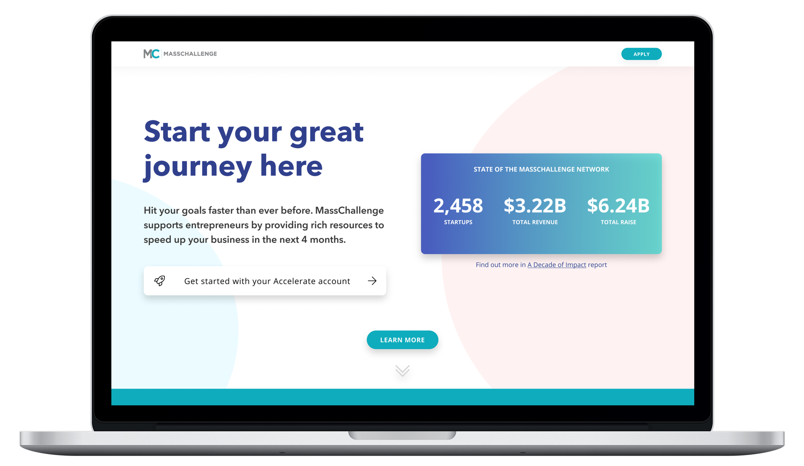
Type
Product Design Internship
Focus
Research + Onboarding
My Role
Product Designer
Timeline
10 Weeks
Tools
Figma, Balsamiq, Optimal Workshop Reframer
Team
Senior UX Designer + Product Manager
Project Overview
The Problem
Alumni weren’t returning to the community.
MassChallenge wanted to increase engagement, but alumni had little reason to return after graduating.
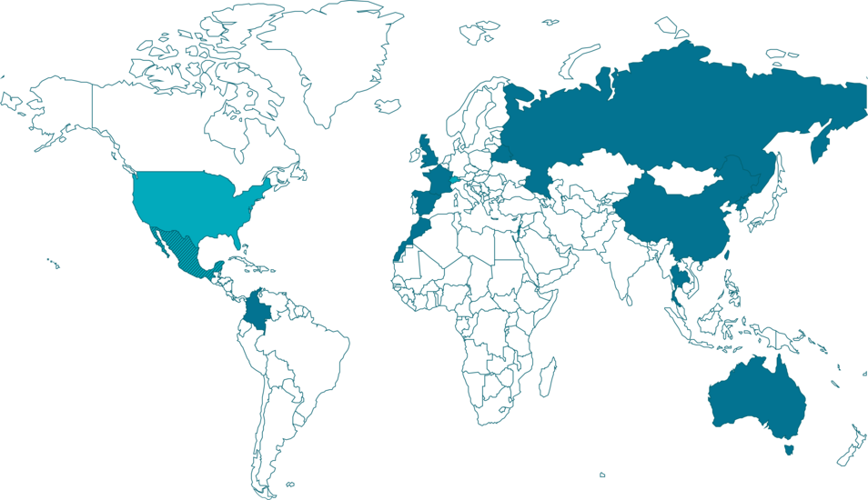
The Solution
Give founders a reason to come back.
We designed a resource-matching experience to help startups discover relevant mentors, investors, and opportunities.
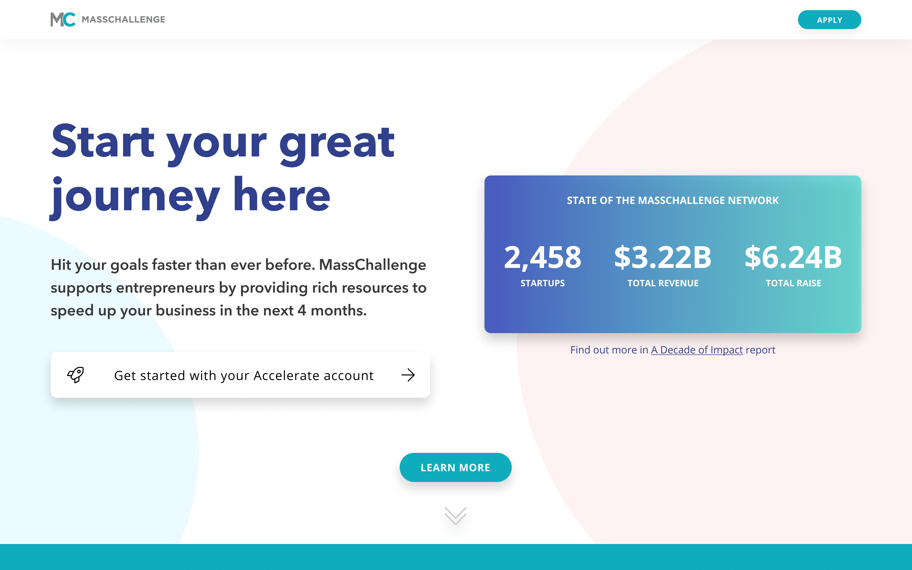
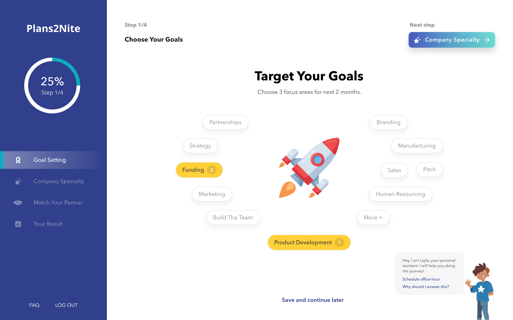
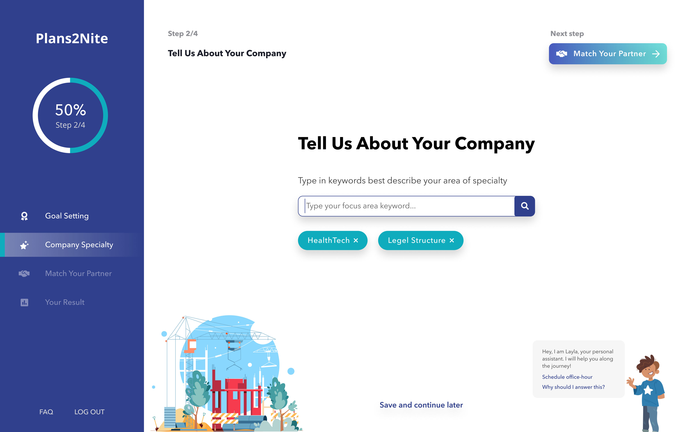
Process
In 10 weeks, I collaborated with a senior designer, a product manager, and key stakeholders, including an alumni manager, 3 program managers, and a partnership manager, to research, design, prototype, and test the new system for improving alumni engagement.
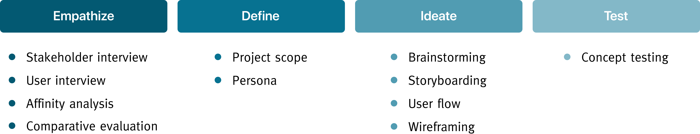
Research
Key Research Findings
01
Platform use dropped after graduation.
Many alumni reported no longer using Mobilize or Accelerate.
02
Outdated information hindered connections.
Startup descriptions did not always match how founders described their companies.
03
Alumni wanted more events.
They valued activities and opportunities to meet at MassChallenge.
04
Contact was limited after graduation.
Most staff interactions with alumni were limited to surveys.
05
Partner matching required manual work.
Connecting partners with relevant alumni involved too many manual tasks.
Research Methods
Stakeholders Interview
5 interviews across 3 offices
- Alumni Manager
- Partnership Manager
- Data Manager
- Switzerland Program Manager
- Israel Program Manager
Alumni Interviews
3 interviews across 3 programs
I recruited Alumni-in-Residence, who typically stayed at the office after winning the previous year's program and had closer relationships with staff.
Survey Analysis
Pre- and post-program surveys
I worked with the data team to analyze pre- and post-program surveys and validate assumptions about alumni behavior.
Comparative Analysis
I reviewed direct, indirect, and parallel competitors across accelerators and social platforms to understand how they engaged alumni.
Supporting Evidence
Comparative Analysis
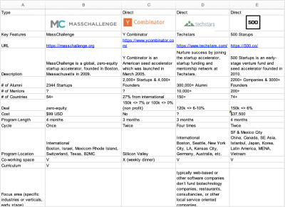
MassChallenge v.s. Accelerator Programs
Mobilize v.s. Social Platforms
User Personas
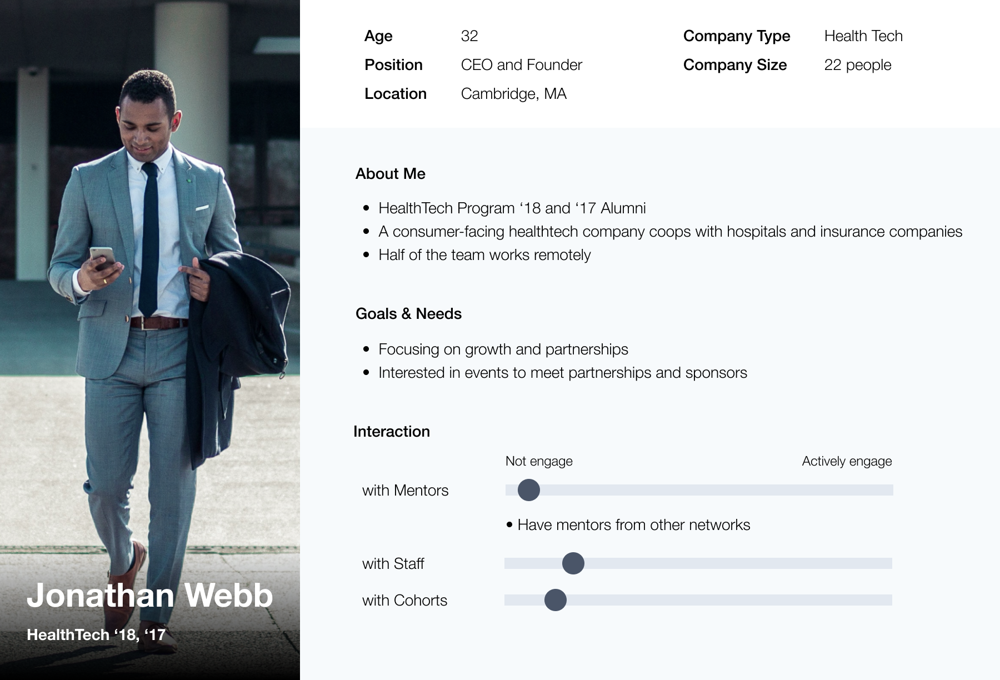
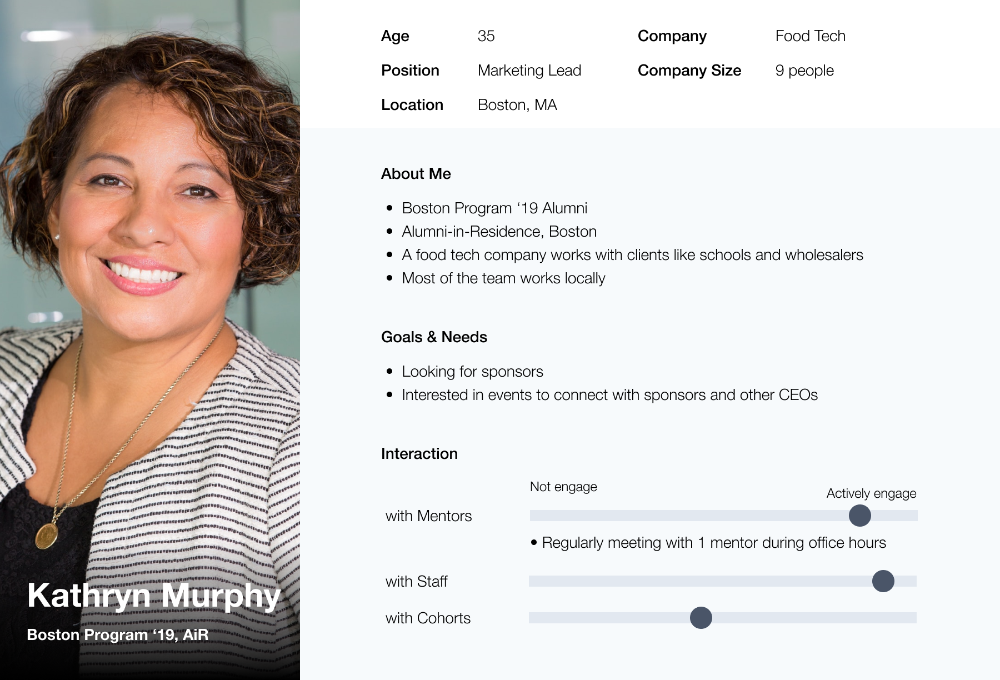
Affinity Diagramming
Synthesizing Interview Themes
I used Optimal Workshop Reframer to synthesize participants' experiences, thoughts, and feelings about the alumni program into five themes.
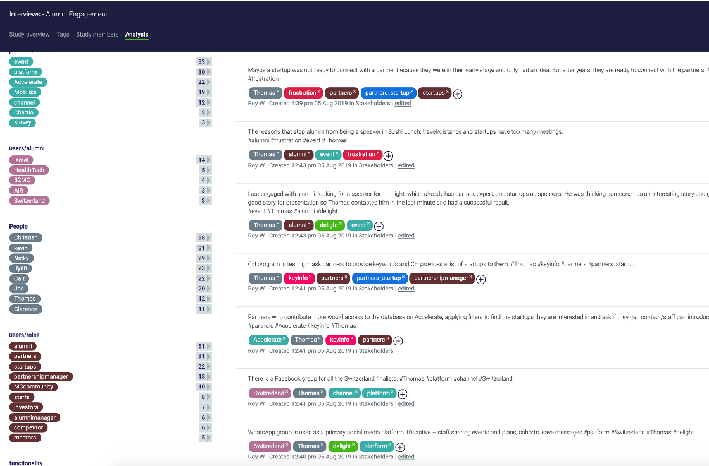
Providing Value to Improve Alumni Engagement
After reviewing the research, I went back to MassChallenge’s business goals. The program relied on connecting startups with partner companies, but many alumni were no longer using the existing platforms after graduation.
I wanted to understand what would make the platform useful enough for founders to return. This helped me focus on the resources and support startups needed as they continued growing.
“There is a gap between the area what we (MassChallenge) called startups and what they call themselves ”
Define
PRIORITIZATION
After sharing insights with the team, we used the impact effort matrix to reshape the design scope for my internship project and focus on one of the problems.
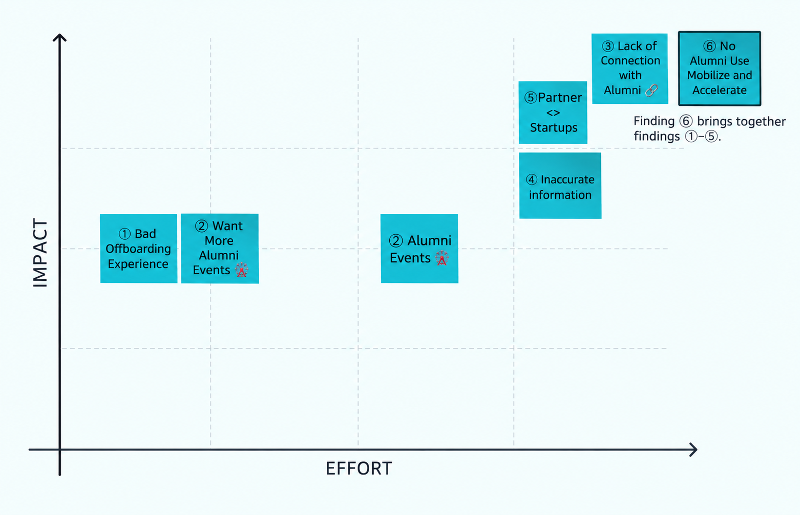
We used this matrix to compare the research findings and narrow the project scope.
Based on the prioritization exercise, we narrowed the scope to first-time user onboarding for the 10-week project.
Re-define the Problem
Defining the Project Scope
MassChallenge's mission guided my design decisions:
“To make it as easy as possible for entrepreneurs to launch and grow new ventures.”
Business Goal
MassChallenge's income relied on providing partner companies with good-quality startups. I kept this relationship in mind when defining the project goal.
Alumni Needs
If founders could not find useful support, they had little reason to stay connected. I considered how their experience during the program could support continued engagement after graduation.
Design Direction
I focused the 10-week project on first-time user onboarding: helping founders set goals and provide up-to-date company information so they could find relevant resources.
Design Ideation
Finds Everything You Need to Launch New Products
Based on the research results, I decided to design a matching system that provides a curated resource for startups to get help in key areas necessary for company success.
Brainstorming Session
I worked with a senior designer on a Crazy 8s exercise. We sketched ideas independently, then compared our approaches and discussed which ones could work within the project scope.
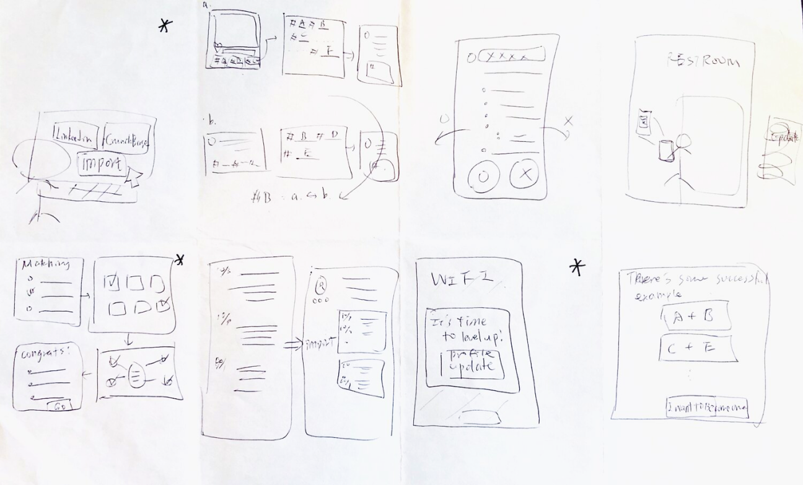
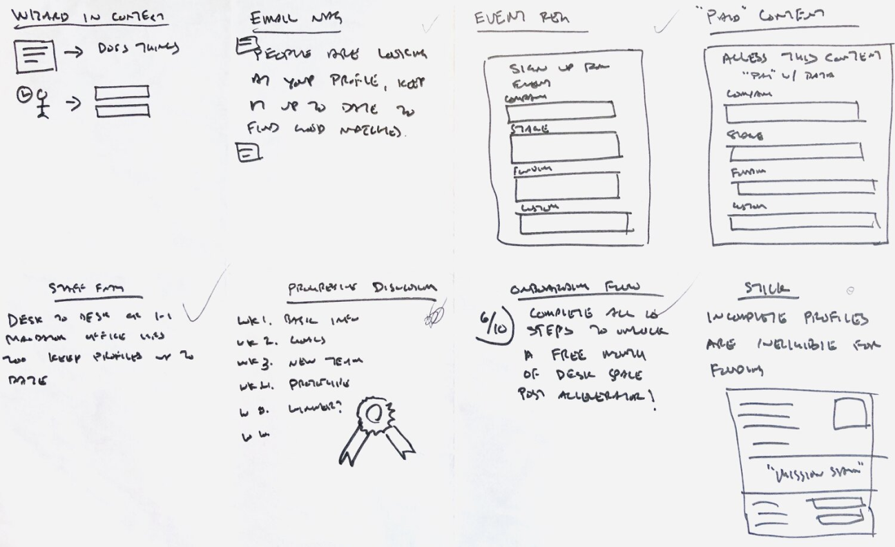
Storyboarding
I created a storyboard to explore how the matching system could help entrepreneurs find relevant resources during the accelerator program. I refined it based on feedback from the team and project constraints.
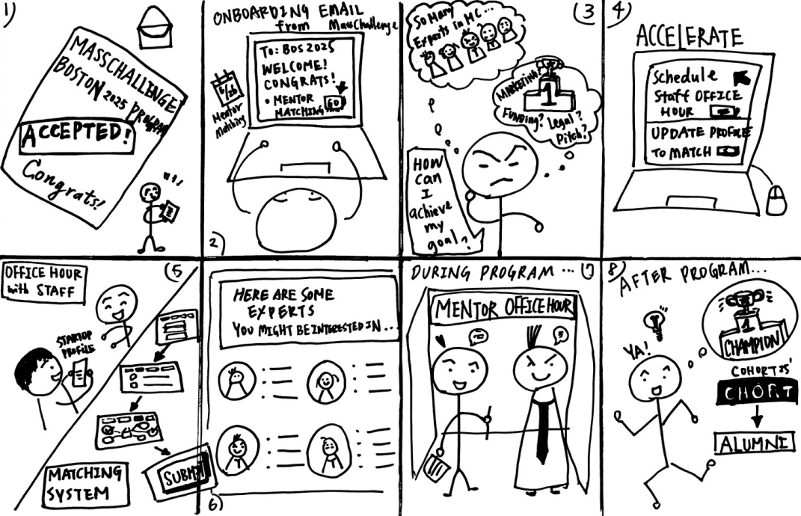
Design Ideation / Jobs to Be Done
As an entrepreneur,
I want to access curated resources, including experts and events, so I can reach my company’s goals.
User Flow
The current on-boarding process for new cohorts includes a 14-page survey that helps MassChallenge to learn more about the startup company. I wanted to replace the questionnaire with a more user-friendly wizard that requires fewer efforts to finish.
After some exploration, I came out with the user flows that illustrate the experience as a first-time user (new cohorts) and a recurring user (current cohorts in the program and alumni).
First-Time Users
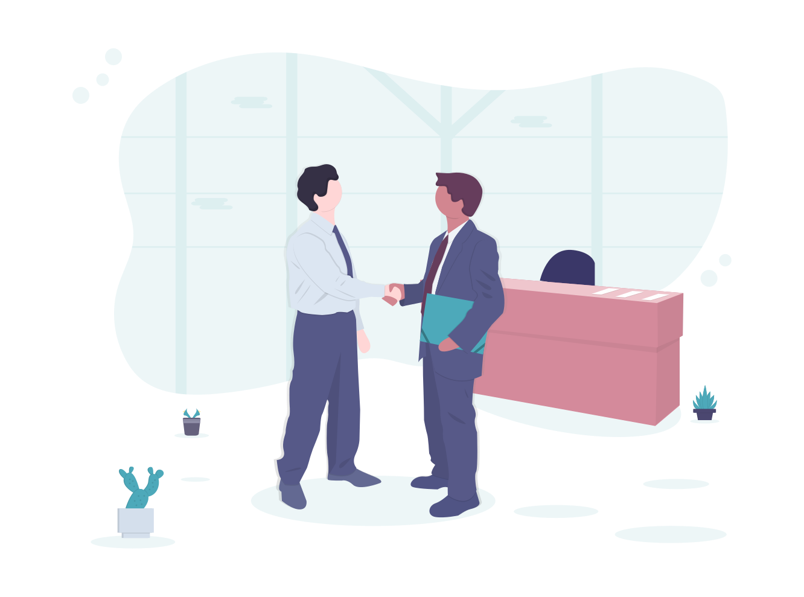
Recurring Users
First-Time Users
User Goal
Onboard with program benefits and goal setting
Design Goal
Create an easy on-boarding process and acquire the updated user information
User Flow
- Click the link to matching system from on-boarding email
- Enter startup’s information, goals and specialty
- Match their needs with the resource provided by MassChallenge, including experts, mentors, staff office hours, investors, events, workshops, etc
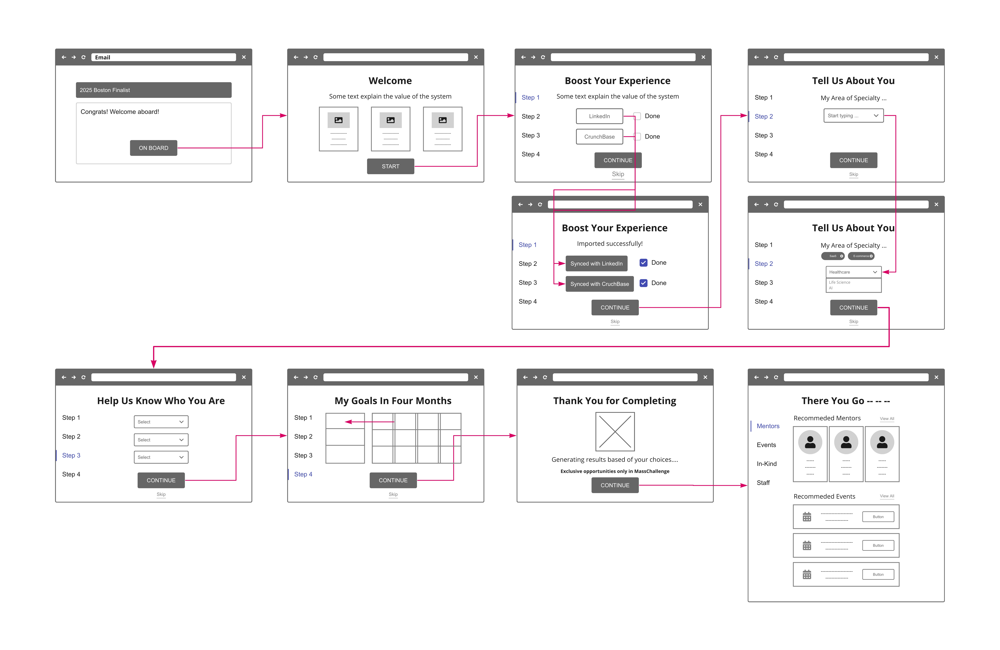
Recurring Users
User Goal
Optimize the resources to make the business grow
Design Goal
Increase the stickiness and keep the user information updated
User Flow
- Design multi-channel entrances: from staff, email, event registration, WiFi login, etc.
- Make them update their profile before granting the access to the resources
- Track if startups pivot or shift focus, keep the contact updated
For example, when the startup signs up for the event, we would add some columns to collect new information. If their profile is not updated for a certain amount of the time, when they login to the WiFi in the office, they will be reminded to update their profile for the latest resource.
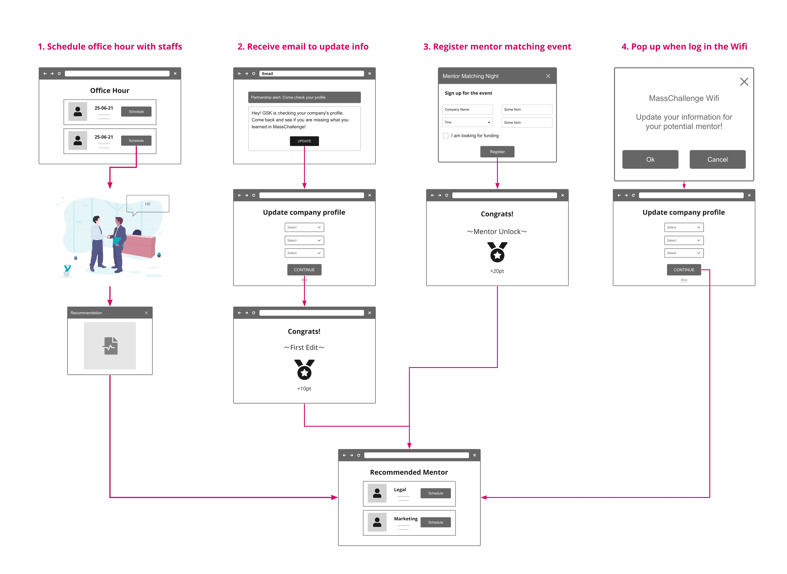
Iteration
Wireframe
Focusing On First-Time Users
Due to the time limitation, I shifted my focus on on-boarding experience for first-time users because I wanted to create a great first-touch.
I created several versions of low fidelity wireframes using Balsamiq and Figma demonstrating the wizard from collecting data to displaying the matching result.
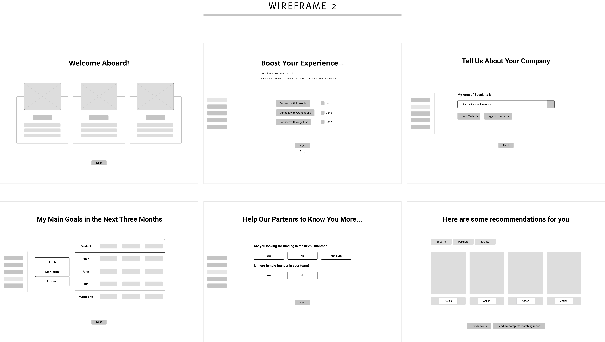
High-fid prototype
A matching system providing curated resources, including potential investors, mentors, events, office hours, to get help in key areas necessary for company success.
Landing Page

Goal Setting
Goal setting is proved to be a powerful process for motivating startup to turn their vision of this future into reality. It also helps the accelerator to provide related resources to the startup.
Company Specialty
To solve the mismatch information between the area MassChallenge called the startup and what they call themselves, the startup can enter the company information with several keywords.
Validation
Concept Testing
Positive Feedback From Leaderships
We arranged several meeting to seek the feedback from stakeholders and we received very positive feedback. They were excited to hear a system that can solve some of the problems brought up by the startup.
- Program Manager
- Data Manager
- Data Manager
- Startup Services Manager
- Managing Director
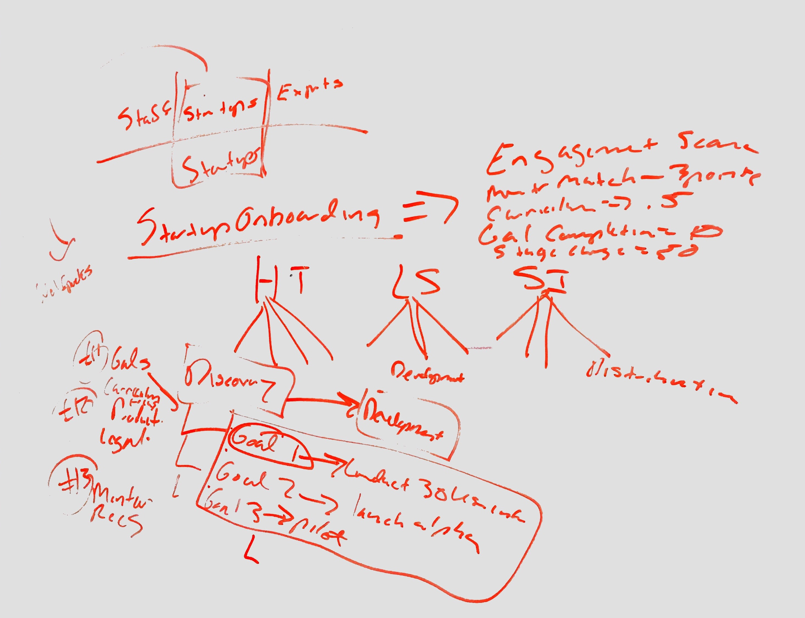
Discovered A More Significant Scope
- Gamification system encouraging startups to explore more
- Customization based on its industry and stage
For example: Customization based on their industries and stages or a gamification system encouraging startups to explore the resource in the accelerator.
Impact
Retiring the Social Platform
The senior leadership also decided to sunset the social platform Mobilize, which is identified as a low usage platform, and resulted in achieving the budget reduction of approximately 500k.
Provided More Related Resources to Startups
1. Opened startup directory to all the startups
2. Included more relevant content on the dashboard for all the users (not just alumni!)
Next Steps
Future implementation
1. A/B testing different functionalities
2. Add gamification design into the system
3. Customize based on startup’s industry and stage
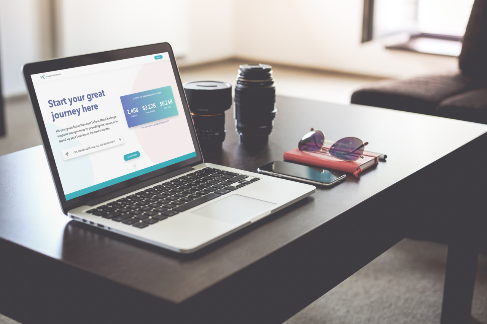